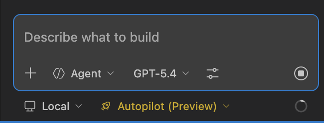
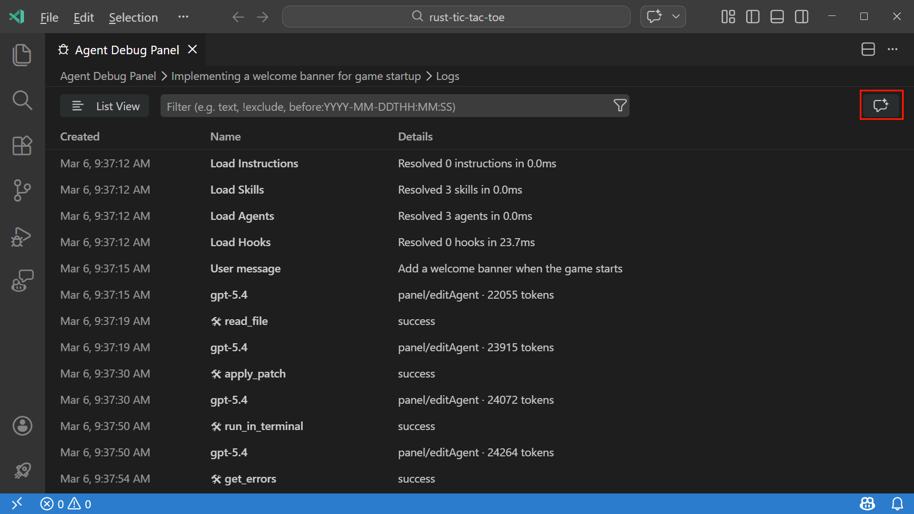
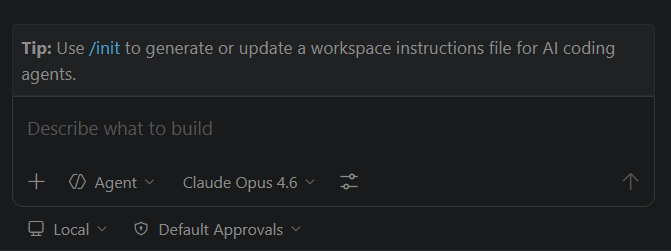
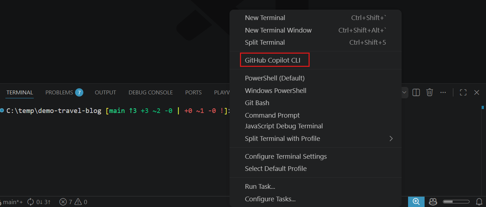
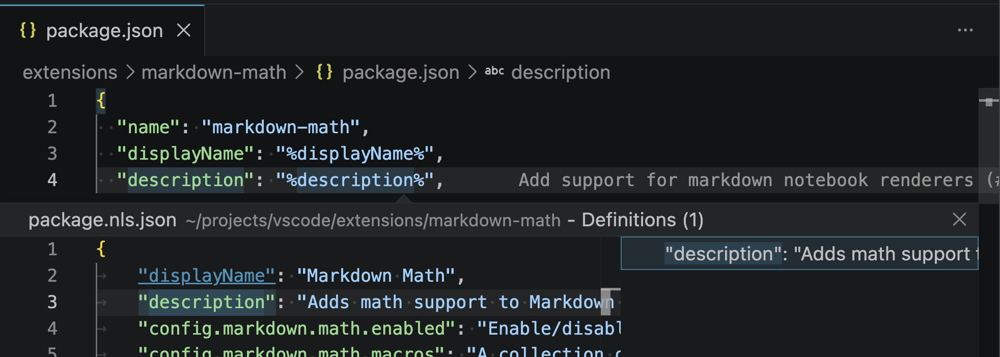
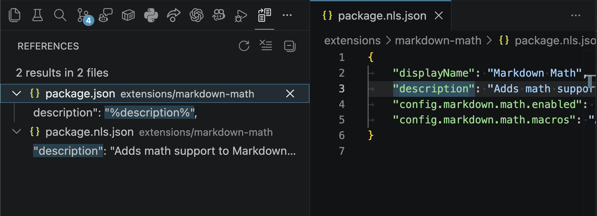

Visual Studio Code 1.111
_发布日期：2026 年 3 月 9 日_
欢迎来到 Visual Studio Code 1.111 版本，这是我们每周稳定版发布的首个版本！此版本进一步增强了智能体体验，包含以下功能：
- 智能体权限：调整每次会话中智能体的自主级别。
- Autopilot（预览）：让您的智能体自主迭代，直到完成任务。
- 智能体作用域钩子（预览）：为智能体附加前置和后置处理逻辑，而不影响其他聊天交互。
- 智能体疑难解答：通过调试事件快照来排查智能体行为和自定义问题。
祝编码愉快！
>如果您想在线阅读这些发布说明，请访问 code.visualstudio.com 上的 更新。
Insiders：想尽快尝试新功能吗？
您可以下载每日 Insiders 构建版，在新功能可用时第一时间体验。
下载 Insiders
Autopilot 与智能体权限
设置：setting(chat.autopilot.enabled)
聊天视图中的新权限选择器让您可以控制智能体的自主程度。权限级别仅适用于当前会话。您可以在会话期间随时通过权限选择器选择不同的级别来更改它。
您可以选择以下权限级别：
| 权限级别 | 描述 | ||
|---|---|---|---|
| --- | --- | ||
| 默认审批 | 使用您配置的审批设置。需要审批的工具在运行前会显示确认对话框。 | ||
| 跳过审批 | 自动批准所有工具调用，不显示确认对话框，并在出错时自动重试。 | ||
| Autopilot（预览） | 自动批准所有工具调用，出错时自动重试，自动回答问题，智能体持续自主工作直到任务完成。 |

Autopilot（预览）
Autopilot 在 Insiders 中默认启用。您可以通过启用 setting(chat.autopilot.enabled) 在 Stable 中激活它。
在幕后，智能体会保持控制并迭代，直到通过调用 task_complete 工具发出完成信号。
注意：跳过审批和 Autopilot 会绕过手动审批提示，并忽略您配置的审批设置，包括对潜在破坏性操作（如文件编辑、终端命令和外部工具调用）的设置。首次启用任一级别时，会显示一个警告对话框要求您确认。请仅在了解安全影响的情况下使用这些级别。
在我们的文档中了解更多关于 Autopilot 和智能体权限 的信息。
智能体作用域钩子（预览）
设置：setting(chat.useCustomAgentHooks)
自定义智能体 frontmatter 现在支持智能体作用域钩子，这些钩子仅在您选择特定智能体或通过 runSubagent 调用时才会运行。这使您可以为特定智能体附加前置和后置处理逻辑，而不影响其他聊天交互。
要创建智能体作用域钩子，请在 .agent.md 文件的 YAML frontmatter 的 hooks 部分中定义它。
要尝试此功能，请启用 setting(chat.useCustomAgentHooks) 设置。有关更多信息，请参阅我们文档中的 智能体作用域钩子。
调试事件快照
为了帮助您理解和排查智能体行为，您现在可以通过在聊天中使用 #debugEventsSnapshot 将智能体调试事件快照作为上下文附加。您可以使用它来询问智能体有关已加载的自定义配置、令牌消耗等信息，或排查智能体行为。
您也可以选择智能体调试面板右上角的星形聊天图标，将调试事件快照作为附件添加到聊天编辑器中。选择附件会打开智能体调试面板日志，并过滤到拍摄快照时的时间戳。

在我们的文档中了解更多关于 调试聊天交互 的信息。
聊天提示改进
聊天体验发展迅速，我们希望确保您及时了解新功能和改进。我们重新设计了聊天提示体验，以便在您的聊天旅程中的合适时机更好地展示相关提示。
聊天提示现在引导您完成结构化的入门之旅。基础提示（例如使用 Plan 智能体和创建自定义智能体）会优先显示。在您完成或关闭基础提示后，生活质量提示（如实验性设置或生成 Mermaid 图表）将按随机顺序显示。

其他聊天提示改进包括：
- 提示仅在单个聊天会话可见时显示，例如在欢迎视图或聊天视图中。如果打开了多个聊天编辑器，提示将被隐藏以减少杂乱。
- 提示包含键盘快捷键，帮助您发现相关的按键绑定。
- 在当前会话中执行或关闭提示后，提示将被隐藏。
- 我们为
/init和/fork斜杠命令添加了提示。/init提示帮助您发现用于初始化项目配置的命令，/fork提示介绍了手动对话分叉功能，让您可以分支对话以探索不同的方案。终端下拉菜单中的 AI CLI 配置文件组（实验性）
设置：setting(terminal.integrated.experimental.aiProfileGrouping)
AI CLI 终端配置文件（如 GitHub Copilot CLI）现在显示在终端配置文件下拉菜单顶部的专用分组中，以提高可发现性。要启用此功能，请打开 setting(terminal.integrated.experimental.aiProfileGrouping) 设置。

扩展开发
扩展 package.json 文件中本地化字符串的基本 IntelliSense
VS Code 支持对扩展的 package.json 中的字符串进行本地化。在此次迭代中，我们添加了一些基本的 IntelliSense 功能，使处理这些本地化字符串更加便捷。
转到定义：跳转到或速览package.nls.json文件中本地化字符串的定义。

查找所有引用：查看本地化字符串在package.json或package.nls.json文件中被引用的所有位置。

工程
随着向每周稳定版发布的转变，我们持续改进工程流程，以更快的速度交付高质量功能。
测试计划项创建
我们添加了一键创建功能，可以从功能请求 Issue 中创建测试计划项。这减少了为新功能设置结构化测试计划所需的手动步骤。
验证步骤生成
由于测试计划项会随机分配给工程师，清晰的验证步骤对于高效有效的测试至关重要。我们添加了一个按钮来在相关 Issue 上生成验证步骤。这有助于确保 Issue 在关闭之前拥有清晰、结构化的步骤来验证修复和功能。
自动将 PR 媒体附件关联到关联的 Issue
当您合并一个在描述中包含图片或 GIF 的拉取请求时，媒体内容现在会自动作为评论发布到关联的 Issue 上。这使得直接在 Issue 上查看修复或功能的可视化演示变得更加容易，从而简化了验证流程。
聊天展示流水线
一个新的自动化流水线处理标记为 chat-showcase 的 Issue。当识别到展示 Issue 时，会自动创建相应的聊天提示 Issue，使为功能添加提示变得更加容易。
已弃用的功能和设置
此版本中的新弃用
无
即将到来的弃用
- 编辑模式自 VS Code 1.110 版本起正式弃用。用户可以通过 VS Code 设置
setting(chat.editMode.hidden)暂时重新启用编辑模式。此设置将在 1.125 版本之前保持支持。从 1.125 版本开始，编辑模式将被完全移除，无法再通过设置启用。值得注意的修复
致谢
贡献给 vscode：
- @cathaysia (cathaysia)：修复(json.schemaDownload.trustedDomains)：避免始终更新 json.sch… PR #298423
- @eliericha (Elie Richa)
- 在 shell 环境中包含调试扩展主机环境 (#241078) PR #298276
- 在远程终端 shell 环境中包含远程调试扩展主机环境 PR #299007
- @jaidhyani (Jai Dhyani)：编辑器：向 cursorMove 命令添加 'foldedLine' 单位 PR #296106
- @neruthes (Neruthes 0x5200DF38)：修复编辑器标点宽度 PR #297741
- @RajeshKumar11：MCP 网关：避免在启动时阻止列表调用 PR #298040
- @Rohan5commit (Rohan Santhosh)：文档：修复提议 API 注释中的重复措辞 PR #298522
- @sanchirico (John Sanchirico)：修复流式传输期间的聊天终端闪烁 PR #298598
贡献给 vscode-copilot-chat：
- @24anisha (Anisha Agarwal)：免除搜索子智能体工具结果写入磁盘 PR #4219
- @arieluchka (Ariel Agranovich)：文档：记录错误的 jaeger 端口。<------ 简单修复 PR #4251
- @bharatvansh (Ayush Singh)：避免向上下文窗口小部件报告子智能体令牌使用情况 PR #3515
贡献给 language-server-protocol：
- @dietrichm (Dietrich Moerman)：修复 Neovim 的 LSP 文档链接 PR #2236
- @MariaSolOs (Maria Solano)：更新元模型 PR #2234
我们非常感谢大家在功能准备就绪后第一时间尝试，所以请经常回来看看，了解最新动态。
>如果您想阅读之前 VS Code 版本的发布说明，请访问 code.visualstudio.com 上的 更新。